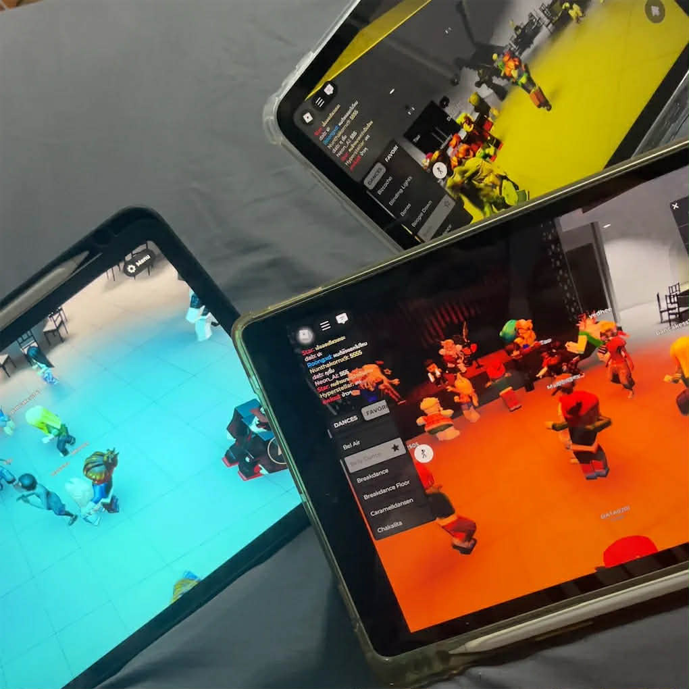

Personal Portfolio • About Me • Contact
ชื่อ-นามสกุล: ธมลวรรณ ศิริพันธ์ (Thamonwan Siripan)
รหัสนักศึกษา: 66124630119
Gmail: 66124630119@lawasri.tru.ac.th
เบอร์โทร: 0623465438
งานอดิเรกของหนูคือเล่นกับแมว ดูหนัง ฟังเพลง และนอนค่ะ หนูชอบบรรยากาศสบาย ๆ ได้อยู่กับสิ่งที่ทำให้รู้สึกปลอดภัยและผ่อนคลาย เวลาฟังเพลงหรือดูหนังจะรู้สึกเหมือนได้พักใจจากอะไรหลาย ๆ อย่าง ส่วนการเล่นกับแมวคือความสุขที่แท้จริงเลยค่ะ 💗🐱
หนูรักแมวมาก ๆ ค่ะ เพราะแมวทำให้รู้สึกอบอุ่น น่ารัก และเป็นกำลังใจเสมอ 💕